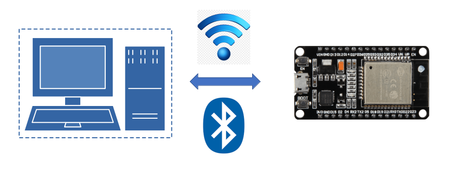

#
The telemetrix-esp32 project allows you to access ESP32 devices over WI-FI or BLE using Python scripts.
The project consists of client APIs used to create Python applications. It also consists of ESP32 resident servers uploaded to an ESP32 device.
For WI-FI and BLE, there are two APIs, one implemented using threading and the other using asyncio.
NOTE: The threaded BLE API is incompatible with Windows or Raspberry Pi OS. However, the asyncio API is compatible with both.
Features#
All three APIs share a common set of features:
- Analog Input
- Analog (PWM) Output
- Analog (DAC) Output
- Digital Input
- Digital Input with Pull Up
- Digital Input with Pull Down
- Digital Output
- Touch Pin Input
- I2C Communications Protocol Primitives
- SPI Communications Protocol Primitives
- OneWire Communications Protocol Primitives
- Support For HC-SR04 Type Distance Sensors
- Support For DHT Temperature/Humidity Sensors
- Servo Motors
- Stepper Motors
- All Data change events are reported asynchronously via user registered callback functions and are timestamped.
- Integrated server debugging facilities is included.
API Documentation#
Online API documentation is available for the WI-FI And BLE Threaded Model API and a separate API for the WI-FI And BLE Asyncio Model.
Examples#
An extensive set of examples is provided for each of the APIs. Links to all the examples are in the table below. You may need to use the horizontal scroll bar at the bottom of the table to see the examples' links.
Copyright (C) 2022 Alan Yorinks. All Rights Reserved.
Last updated 11 April 2022